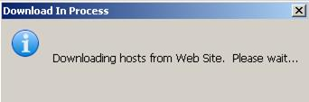
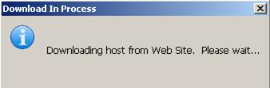

| Basics | |
The Cleo Harmony application provides the capability for downloading preconfigured hosts directly from the Cleo web site, guaranteeing that the latest distributed host is always available for cloning and activation.
The following dialog is displayed:

After the download has completed, the preconfigured hosts are displayed in the Pre-configured folder, sorted into Industry folders.
The following dialog is displayed:
